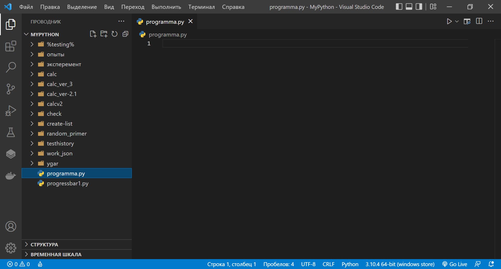
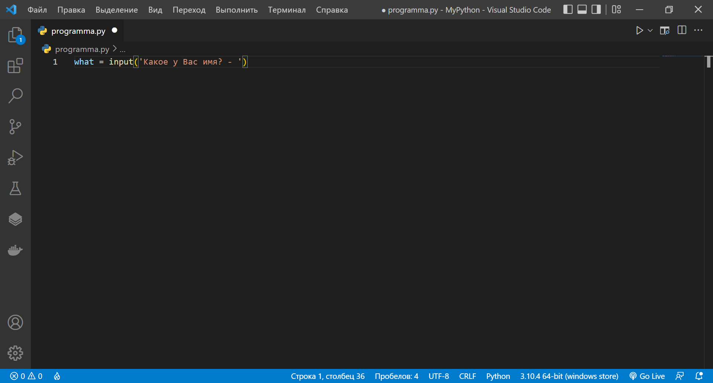
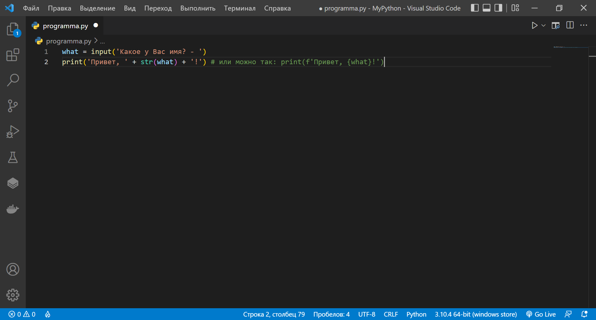
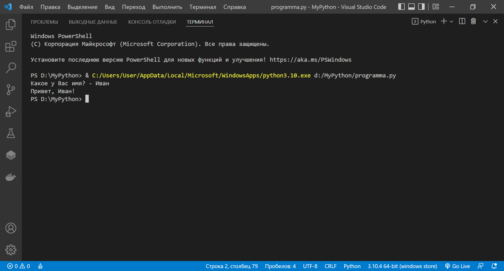
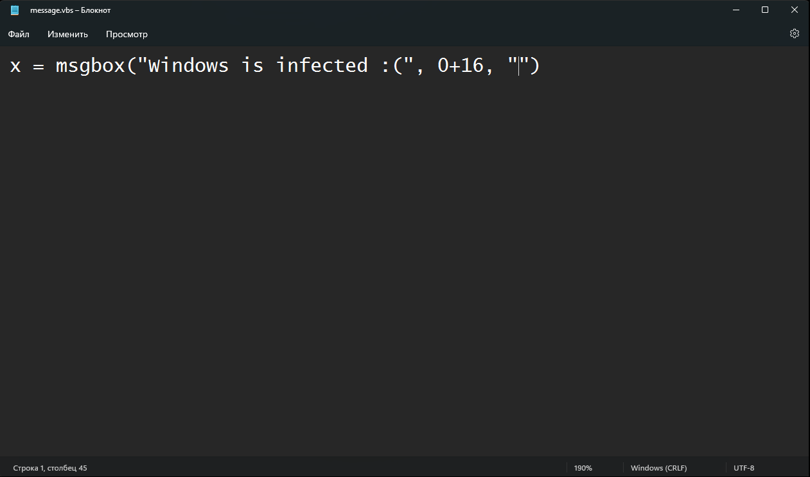
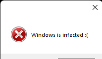

Guids
Создаём простой batch вирус | Batch script
Начинаем!
1. Создаём файл - virus.txt
2. Впишите вот это:
@echo off
CLS
3. Потом создаём переменную go (или называйте как хотите) и в ней пишем:
(Как это всё будет выглядить)
go:
start notepad.exe
4.Не забываем дописать - goto go
Итоговый код
@echo off
CLS
go:
start notepad.exe
goto go
На заметку: notepad.exe - это блокнот
5. Сохраняем файл и переименуем его с virus.txt на virus.bat
Справка:
Что-бы таким способом поменять расширение файла, следуйте за инструкцией:
1. Откройте панель управления (win + r, пишите - control panel)
2. Ищите "параметры проводника"
3. Переходите во вкладку "вид"
4. Снимите галочку с "Скрывать расширения для зарегистрированных типов файлов"
5. Не забудьте нажать "Ок"
Вирус готов!
Создаём первую python программу | Python
Наша цель - создать программу, который запрашивает имя пользователя и выводит приветствие с введёным именем.
Всем доброго время суток! Сегодня мы напишем первую мега простую программу. А какую? Вы уже наверняка поняли из нашей цели.
Давайте-же начнём!
Первым делом открываем IDE для python, это может быть и Visual Studio и Visual Studio Code и PyCharm и многие другие среды разработки. Я-же
использую Visual Studio Code.
Вторым шагом мы создаём файл, называйте его как хотите, я-же назову его programma.py (не забываем прописать расширение .py!)

Всё, файл создан!
Теперь мы в программе создаём переменную, допустим мы его назовём what, и в ней мы пишем: input('Какое у Вас имя? - ')

Теперь мы пишем функцию print() и вней записываем:
'Привет!' + str(what) + '!'
Вообще можно и проще сделать, вместо того, что мы прописали print('Привет, ' + str(what) + '!'), мы запишем вот это: print(f'Привет, {what}!') <- так
мы использовали f строку. (про f строки читайте здесь)

Всё! Программа готова! Только сохранить не забудьте :)
Результат

Вывод сообщения об фейковой ошибке | Visual Basic
Доброго время суток! Сейчас мы научимся выводить сообщение об фейковой ошибке.
Для начала создадим текстовый файл. Далее мы пишем вот это:
x = msgbox("Windows is infected :(", 0+16, "")

Синтаксис сценария:
x = msgbox("Сама проблема", числовое/ые выражение/я, "Автор")
Получается мы использовали комбинацию чисел, чтобы сделать диалоговое окно о критической ошибке и с кнопкой "Ок". Там где 0+16 - это числовые выражения постоянных, отвечающие за выводимые кнопки, значки и режимы окна. Вот весь список:
0 (кнопка ОК)
1 (кнопки OK and Отмена)
2 (кнопки Прервать, Повтор и Пропустить)
3 (кнопки Да, Нет, Отмена)
4 (кнопки Да и Нет)
5 (кнопки Заново и Отменить)
16 (значок критической ошибки)
32 (значок помощи)
48 (значок предупреждения)
64 (значок информации)
256 (вторая кнопка по умолчанию)
512 (третья кнопка по умолчанию)
768 (четвёртая кнопка по умолчанию)
4096 (окно будет постоянно мешаться, перекрывая остальные окна других программ, пока пользователь не отреагирует)
262144 (поверх других окон)
524288 (текст сообщения выводится от правой части окна)
Список числовых выражений постоянных взята от сюда - https://computer76.ru/2014/08/07/how_to_create_pop_ups/
Числовые выражения также можно объеденять. Например: 0+16 (там где 0 - окно будет с кнопкой "Ок", там где 16 - будет окно о критической ошибке)
Сохраняем наш файл с расширением .vbs (сохранить как -> название файла.vbs, все файлы "*", кодировка - ANSII(если присутствует кирилица))
Что у нас вышло

Примеры
Окно об ошибке
Окно о предупреждении
Окно об информации
Окно о справке
Гайды
Советы
Главная
Blender проекты